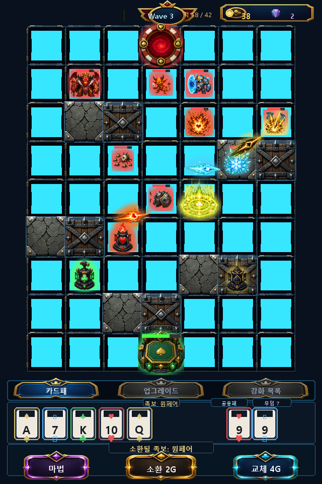
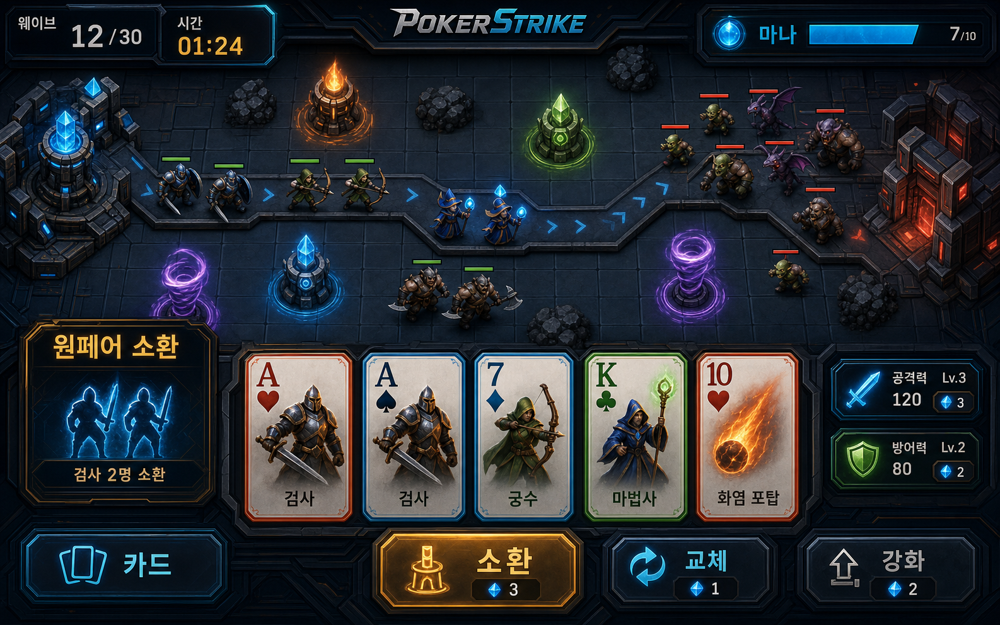
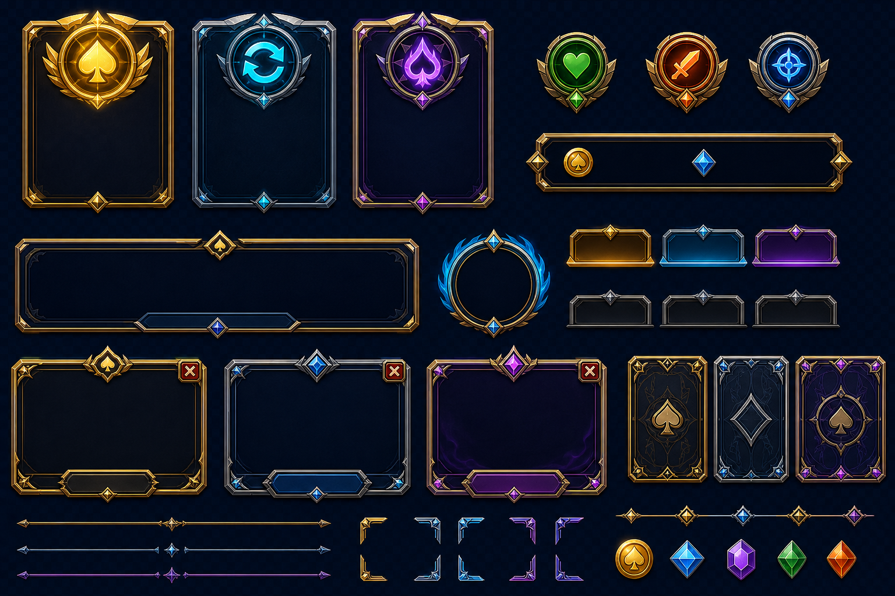
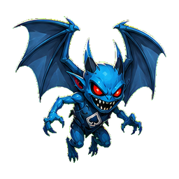

<!DOCTYPE html>
<html lang="ko">
<head>
  <meta charset="UTF-8">
  <meta name="viewport" content="width=device-width, initial-scale=1.0">
  <title>PokerStrike 湲고쉷??/title>
  <style>
    body { margin: 0; background: #0d1117; color: #e6edf3; font-family: "Segoe UI", sans-serif; line-height: 1.65; }
    main { max-width: 920px; margin: 0 auto; padding: 40px 24px 72px; }
    h1 { color: #f0a500; font-size: 30px; margin-bottom: 8px; }
    h2 { color: #58a6ff; font-size: 19px; margin-top: 32px; border-bottom: 1px solid #30363d; padding-bottom: 8px; }
    p, li { color: #c9d1d9; font-size: 14px; }
    code { background: #21262d; color: #ffdd88; padding: 2px 6px; border-radius: 4px; }
    .note { background: #161b22; border: 1px solid #30363d; border-left: 3px solid #58a6ff; padding: 14px 16px; border-radius: 6px; }
  </style>
</head>
<body>
<main>
  <h2>보드/본진/버튼 PNG 리소스 적용</h2>
  <ul>
    <li>보드 타일, 장애물, 적 스폰 포털, 본진 코어를 PNG 리소스로 생성하고 인게임 렌더링에 적용했다.</li>
    <li>이동 가능한 빈 칸은 어두운 반투명 오버레이를 적용해 장애물/본진/스폰과 더 명확하게 구분한다.</li>
    <li>이동 가능한 빈 칸의 타일 알파와 어두운 오버레이 강도를 높여 실제 플레이 화면에서도 어두운 영역 구분이 더 선명하게 보이도록 했다.</li>
    <li>지을 수 있는 빈 칸의 청록색 내부 글로우와 코너 반짝임은 제거해 보드와 타워/적을 더 잘 읽을 수 있게 했다.</li>
    <li>장애물은 석재 블록과 목재/철제 바리케이드 두 종류를 교차 사용해 막힌 칸을 더 명확하게 구분한다.</li>
    <li>본진은 텍스트 라벨 대신 <code>base-core.png</code>를 우선 표시해 보드 안에서 시각적으로 더 잘 읽히게 했다.</li>
    <li>하단 마법/소환/교체 버튼, 탭 버튼, 강화 버튼은 새 PNG 프레임을 사용하고 텍스트는 Phaser에서 별도로 렌더링한다.</li>
    <li>이미지 버튼 hover는 크기 확대 대신 밝기/투명도 변화만 사용해 한 번 커진 버튼이 원래 크기로 돌아오지 않는 현상을 방지한다.</li>
    <li>웨이브 강화 선택지는 기존 사각형 박스 대신 UI 키트의 PNG 프레임을 활용한 3지선다 카드형 화면으로 표시한다.</li>
    <li>하단 마법/소환/교체 버튼은 앞 심볼 없이 텍스트만 표시하고, 버튼 프레임의 시각 중심에 맞도록 라벨 세로 위치를 보정했다.</li>
    <li><code>카드패</code>, <code>업그레이드</code>, <code>강화 목록</code> 탭 텍스트는 PNG 탭 프레임의 시각 중심에 맞도록 세로 위치를 보정했다.</li>
    <li>자원 패널과 웨이브 배지도 새 UI 프레임을 preload하며, 리소스가 없을 때는 기존 도형 UI로 폴백한다.</li>
    <li>전투 메시지 전용 하단 슬롯은 제거하고, 상단 HUD/보드/하단 HUD 사이에 얕은 여백을 확보했다.</li>
    <li>상단 HUD는 웨이브 정보를 화면 중앙에 두고, 골드/보석 자원은 우측 상단 패널 안에서 아이콘+숫자 묶음으로 우측 정렬한다.</li>
    <li>웨이브 표기는 <code>Wave N</code> 영문 라벨로 배지 이미지의 시각 중심에 맞춰 배치한다.</li>
    <li>골드와 보석은 텍스트 라벨 대신 전용 PNG 아이콘과 우측 정렬 숫자로 표시한다.</li>
    <li>현재 구현 플레이 예시 이미지를 새 보드/장애물/본진/버튼 리소스 기준으로 다시 생성했다.</li>
  </ul>
  <h2>공격 VFX 리소스 적용</h2>
  <ul>
    <li>공격 투사체와 명중 효과를 PNG 리소스로 생성했다. 명중 타격 이펙트는 타일을 덮지 않도록 시작 크기와 확장 배율을 낮췄다.</li>
    <li>하트는 화염, 다이아는 빙결, 클로버는 방어 약화, 스페이드는 저격/관통 계열 VFX를 사용한다.</li>
    <li>스트레이트 플러시 오라는 <code>aura-ring.png</code>를 사용한다.</li>
    <li>현재 구현 플레이 예시 이미지에도 공격 VFX를 반영했다.</li>
    <li>런타임 로더는 <code>src/assets/art/AssetKeys.js</code>에서 VFX PNG를 함께 preload한다.</li>
  </ul>
  <h2>타워 시인성과 적 밸런스 조정</h2>
  <ul>
    <li>타워 PNG는 문양과 역할 실루엣이 더 크게 보이는 단순형 디자인으로 교체했다.</li>
    <li>좋은 족보일수록 타워 크기, 링, 광원, 등급 라벨, 족보별 장식 레이어가 단계적으로 강화되어 낮은 족보와 차이가 크게 느껴지도록 했다.</li>
    <li>타워 본체와 등급 링은 타일 안쪽 여백을 침범하지 않도록 축소해 전장 시야를 가리지 않게 했다. 투페어와 트리플처럼 인접한 족보도 서로 다른 장식 실루엣을 가진다.</li>
    <li>타워 HP 바는 피해를 받은 상태에서만 표시하고, 최대 체력일 때는 숨겨 전장 시야를 더 깔끔하게 유지한다.</li>
    <li>적 기본 이동속도는 전 타입 30% 감소시켰다.</li>
    <li>전체 적 수량 배율은 기존의 2배로 늘려, 느려진 적이 더 큰 무리로 압박하도록 조정했다.</li>
  </ul>
  <h2>현재 구현 플레이 예시</h2>
  
  <ul>
    <li>현재 구현 기준의 640x960 세로 화면 예시다.</li>
    <li>실제 PNG 몬스터/타워 리소스와 현재 UI 배치를 반영했다.</li>
    <li>동일 이미지는 <code>docs/PokerStrike_01_플레이예시.png</code>에도 반영했다.</li>
  </ul>
  <h2>PNG 아트 리소스 재생성</h2>
  <ul>
    <li>몬스터 13종과 타워 4종을 PNG 래스터 리소스로 재생성했다.</li>
    <li>각 리소스는 256x256 투명 PNG로 정규화하고, 게임에서는 축소 표시한다.</li>
    <li>런타임 로더는 <code>src/assets/art/AssetKeys.js</code>에서 <code>.png</code> 파일만 참조한다.</li>
    <li>전체 리소스 목록은 <code>docs/PokerStrike_아트_리소스_목록.md</code>에서 관리한다.</li>
  </ul>
  <h1>PokerStrike 湲고쉷??/h1>
  <p class="note">?ъ빱 議깅낫濡??좊떅 ?뚰솚怨?留덈쾿??寃곗젙?섎뒗 ?몃줈??移대뱶 ?뷀렂??寃뚯엫.</p>

  <h2>?뚮젅??誘몃━蹂닿린</h2>

<h3>?뚮젅??誘몃━蹂닿린</h3>


<h2>?꾩옱 UI 蹂€寃??ы빆</h2>
  <ul>
    <li>移대뱶????쓽 ?먰뙣 ??蹂댁“ ?쇰꺼???쒓굅?덈떎.</li>
    <li>怨듭슜???쇰꺼 ?놁뿉 <code>臾대뜡 N</code> 移댁슫?몃? ?쒖떆?쒕떎.</li>
    <li>留덈쾿 ?ъ슜 ???먰뙣?€ 怨듭슜?⑥뿉???뚮え??移대뱶???쇰컲 踰꾨┝?⑥? 遺꾨━??留덈쾿 臾대뜡???꾩쟻?쒕떎.</li>
    <li><code>移대뱶??/code>, <code>?낃렇?덉씠??/code>, <code>媛뺥솕 紐⑸줉</code> ??쓣 ?볦? ??諛??뺥깭濡??쒖떆?쒕떎.</li>
    <li>?낃렇?덉씠????쓽 媛뺥솕 踰꾪듉?€ 諛뺤뒪??踰꾪듉?쇰줈 ?뺣━?섍퀬 hover ?곹깭瑜??쒓났?쒕떎.</li>
    <li>泥??ㅽ뀒?댁? ?대━??吏곹썑 ?낃렇?덉씠???쒗넗由ъ뼹??1???쒖떆?쒕떎.</li>
    <li>?덉떆 ?대?吏€??HUD??援ъ꽦??李멸퀬???곷떒 ?먯썝 ?쒖떆瑜?諛뺤뒪?뺤쑝濡??뺣━?덈떎.</li>
    <li>怨⑤뱶?€ 蹂댁꽍?€ ?섎굹???먯썝 ?대윭?ㅽ꽣 ?덉뿉 紐⑥븘 ?쒖떆?쒕떎.</li>
    <li>泥대젰?€ ?곷떒 HUD?먯꽌 ?쒓굅?섍퀬 蹂몄쭊 移몄쓽 HP 諛붾줈留??쒖떆?쒕떎.</li>
    <li>?⑥씠釉?UI???먯썝 ?대윭?ㅽ꽣?€ ?⑥뼱吏?蹂꾨룄 諛곗?濡??쒖떆?쒕떎.</li>
    <li>?섎떒 ?⑤꼸?€ ??諛? 移대뱶, 誘몃━蹂닿린/?≪뀡 踰꾪듉???쒕줈 寃뱀튂吏€ ?딅룄濡?怨좎젙 援ы쉷?쇰줈 ?щ같移섑뻽??</li>
    <li>怨듭슜??臾대뜡 ?쇰꺼怨?議깅낫 誘몃━蹂닿린??移대뱶 ?꾩뿉 寃뱀퀜 ?꾩슦吏€ ?딄퀬 ?꾩슜 ?쇰꺼 以꾩뿉 ?쒖떆?쒕떎.</li>
    <li><code>移대뱶??/code>, <code>?낃렇?덉씠??/code>, <code>媛뺥솕 紐⑸줉</code> ??? 移대뱶 ?꾩そ??諛곗튂?쒕떎.</li>
    <li>移대뱶 UI???띿꽦???뚮몢由? 諛앹? 移대뱶 硫? ???レ옄 以묒떖?쇰줈 媛€?낆꽦???믪???</li>
    <li>?띿꽦 ?쒓린???쒓? ?띿꽦紐??€??<code>??/code>, <code>??/code>, <code>??/code>, <code>??/code> 移대뱶 臾몄뼇 ?꾩씠肄섎쭔 ?ъ슜?쒕떎.</li>
    <li>移대뱶 以묒븰 ?レ옄?€ ?섎떒 ?띿꽦 ?꾩씠肄섏쓣 ???ш쾶 ?쒖떆?쒕떎.</li>
    <li>?뚰솚??議깅낫 誘몃━蹂닿린??????湲€瑗대줈 ?쒖떆?쒕떎.</li>
    <li>?붾㈃???몄텧?섎뒗 源⑥쭊 ?쒓? 臾몄옄?댁쓣 ?뺤긽 ?쒓뎅?대줈 ?뺣━?덈떎.</li>
    <li>?꾩옣 ?꾩뿉 吏곸젒 寃뱀튂???곹깭 湲€?먮뒗 ?꾩옣 ?섎떒 硫붿떆吏€ ?щ’怨?怨좎젙 ?뺣낫 ?⑤꼸???쒖떆?쒕떎.</li>
    <li>???뺣낫 ?⑤꼸?€ ?곸쓣 ?곕씪?ㅻ땲吏€ ?딄퀬 ?곗륫 ?곷떒 怨좎젙 援ъ뿭???쒖떆?쒕떎.</li>
    <li>洹몃━???€ ?ш린瑜??뚰룺 以꾩뿬 ?꾩옣怨??섎떒 UI ?ъ씠???띿뒪???꾩슜 ?덉쟾 援ъ뿭???뺣낫?쒕떎.</li>
    <li>???좊떅?€ ?⑥깋 ?꾪삎 ?€???€?낅퀎 ?됱긽怨??μ떇???덈뒗 紐ъ뒪??洹몃옒?쎌쑝濡??쒖떆?쒕떎.</li>
    <li>踰꾪듉, HUD, 紐⑤떖, ?? 移대뱶 ?μ떇???곸슜??UI 由ъ냼???쒗듃?€ ?곸슜 紐⑸줉??蹂꾨룄 臾몄꽌濡?愿€由ы븳??</li>
  </ul>

  <h2>移대뱶 ?먮쫫</h2>
  <ul>
    <li>?뚰솚: ?먰뙣 5?μ쓣 踰꾨┝?⑤줈 蹂대궡怨????먰뙣瑜?戮묐뒗??</li>
    <li>援먯껜: ?좏깮???먰뙣 1?μ쓣 踰꾨┝?⑤줈 蹂대궡怨???移대뱶 1?μ쓣 戮묐뒗??</li>
    <li>留덈쾿: ?먰뙣 5?κ낵 怨듭슜??2?μ쓣 留덈쾿 臾대뜡?쇰줈 蹂대궡怨? ???먰뙣?€ ??怨듭슜?⑤? 戮묐뒗??</li>
    <li>?뚰솚 珥덇린 鍮꾩슜?€ 2G濡???떠 珥덈컲 ?€???꾧컻 ?띾룄瑜?鍮좊Ⅴ寃??쒕떎.</li>
    <li>?먰럹??留덈쾿?€ <code>援먯껜 鍮꾩슜 珥덇린??/code>濡? ?꾩쟻??援먯껜 鍮꾩슜??珥덇린媛믪쑝濡??섎룎由곕떎.</li>
  </ul>

  <h2>臾대뜡 移댁슫??/h2>
  <p>臾대뜡 移댁슫?몃뒗 留덈쾿?쇰줈 ?뚮え?섏뼱 ?대쾲 ?몄뀡?????쒗솚?먯꽌 鍮좎쭊 移대뱶 ?섎? ?삵븳?? ?쇰컲 ?뚰솚/援먯껜濡?踰꾨┛ 移대뱶????移댁슫?몄뿉 ?ы븿?섏? ?딅뒗??</p>

  <h2>?⑥씠釉?媛뺥솕 ?좏깮吏€</h2>
  <ul>
    <li>?꾩옱 ?€???좊떅??1紐??댁긽???좊떅 媛뺥솕留??좏깮吏€???깆옣?쒕떎.</li>
    <li>?덈? ?ㅼ뼱 臾??띿꽦 ?좊떅???놁쑝硫?臾??띿꽦 怨듦꺽??媛먯냽/?ш굅由?媛뺥솕???꾨낫?먯꽌 ?쒖쇅?쒕떎.</li>
    <li>?쒕줈??鍮꾩슜 媛먯냼泥섎읆 ?꾩옱 ?좊떅??吏곸젒 ?€?곸쑝濡??쇱? ?딅뒗 寃쎌젣??媛뺥솕??怨꾩냽 ?깆옣?????덈떎.</li>
    <li>媛뺥솕 ?좏깮吏€媛€ ?쒖떆?섎뒗 ?숈븞 ?쒓컙 寃쎄낵 怨⑤뱶 ?섏엯?€ ?쇱떆 ?뺤??쒕떎.</li>
    <li>媛뺥솕 ?좏깮吏€???쒕ぉ/?④낵 湲€瑗댁? ?꾪닾 以묒뿉???쎄린 ?쎈룄濡??ш쾶 ?쒖떆?쒕떎.</li>
  </ul>

  <h2>?낃렇?덉씠??援ъ“</h2>
  <ul>
    <li><code>??/code> 蹂댁꽍 媛뺥솕??紐⑤뱺 ?€?뚯뿉 ?곸슜?섎뒗 ?곴뎄 HP/ATK ?깆옣?대떎.</li>
    <li>怨⑤뱶 臾몄뼇 媛뺥솕??<code>??/code>, <code>??/code>, <code>??/code>, <code>??/code> 以??좏깮??臾몄뼇 ?€?뚯쓽 怨듦꺽?λ쭔 10% ?щ┛??</li>
    <li>怨⑤뱶 臾몄뼇 媛뺥솕??45G濡?鍮꾩슜 ?€鍮??⑥쑉?€ ???留??먰븯??臾몄뼇??蹂닿컯?섎뒗 ?좏깮吏€??</li>
    <li>?좊떅??吏곸젒 ?좏깮?섎㈃ 湲곗〈泥섎읆 媛쒕퀎 HP/ATK 媛뺥솕???ъ슜?????덈떎.</li>
  </ul>

  <h2>?꾪닾 諛몃윴??蹂€寃?/h2>
  <ul>
    <li>?ㅽ듃?덉씠???뚮윭???ㅻ씪 ?좊떅?€ 二쇰? ?꾧뎔 以?媛숈? ?띿꽦 ?좊떅留?怨듦꺽 ?띾룄瑜?媛뺥솕?쒕떎.</li>
    <li>?ㅻ씪濡?媛뺥솕 以묒씤 ?좊떅 ?꾩뿉??<code>媛뺥솕</code> ?곹깭 ?쒖떆媛€ ?щ떎.</li>
    <li>諛붾엺 ?띿꽦 ?⑥씪 怨듦꺽?€ ???댁긽 諛⑹뼱?μ쓣 愿€?듯븯吏€ ?딄퀬, 諛⑹뼱??紐ъ뒪?곗쓽 諛⑹뼱?μ뿉 ?곕씪 ?쇳빐媛€ 媛먯냼?쒕떎.</li>
    <li>???띿꽦 ?좊떅?€ 怨듦꺽 ???€?곸뿉寃?諛⑹뼱??媛먯냼 ?④낵瑜??곸슜?쒕떎. ?깃툒???믪쓣?섎줉 諛⑹뼱??媛먯냼?됱씠 而ㅼ쭊??</li>
    <li>紐⑤뱺 ?대룞?띾룄 媛먯냼 ?④낵??吏€?띿떆媛꾩씠 ?앸굹硫??곸쓽 ?먮옒 ?대룞?띾룄濡?蹂듦뎄?쒕떎.</li>
    <li>???좊떅???대┃?섎㈃ ?대떦 ?곸쓽 HP?€ ?꾩옱 諛⑹뼱?μ쓣 ?뺤씤?????덈떎.</li>
    <li>諛⑹뼱??媛먯냼 ?곹깭???섏튂 ?놁씠 <code>諛⑹뼱??媛먯냼 以?/code>?쇰줈留??쒖떆?쒕떎.</li>
    <li>寃쎈줈媛€ ?꾩쟾??留됲엺 ?곸? 留됲엺 ?€???듦낵?섏? ?딄퀬, 留됯퀬 ?덈뒗 ?€???€ 諛뽰뿉??硫덉떠 怨듦꺽?쒕떎.</li>
  </ul>

  <h2>?ㅽ뀒?댁? 援ъ꽦</h2>
  <ul>
    <li>紐⑤뱺 ?ㅽ뀒?댁???留덉?留??⑥씠釉뚯뿉??蹂댁뒪 紐ъ뒪?곌? 理쒖냼 1???댁긽 ?깆옣?쒕떎.</li>
    <li>?ㅼ젣 ?ㅽ룿?섎뒗 ???섎웾?€ 1?ㅽ뀒?댁? 3諛곕? 湲곗??쇰줈, ?ㅽ뀒?댁?媛€ ?ㅻ??섎줉 吏€??諛곗쑉濡?利앷??쒕떎.</li>
    <li>?ㅽ뀒?댁?蹂????섎웾 諛곗쑉?€ <code>3 * 1.35^(?ㅽ뀒?댁?-1)</code>??諛섏삱由쇳빐 ?곸슜?쒕떎.</li>
    <li>媛??ㅽ뀒?댁???1?⑥씠釉뚮뒗 ?ㅽ뀒?댁? 諛곗쑉??55%留??곸슜???쎄쾶 ?쒖옉?섍퀬, 留덉?留??⑥씠釉뚮뒗 160%源뚯? ?щ젮 ?꾨컲 ?뺣컯??媛뺥솕?쒕떎.</li>
    <li>???ㅽ룿 理쒖냼 媛꾧꺽?€ 120ms濡??좎??섍퀬, 媛숈? ?⑥씠釉뚯쓽 ??洹몃９?€ ?쒖옉 ?쒓컙??議곌툑???뉕컝由ш쾶 ???쒓볼踰덉뿉 ?잛븘吏€???먮굦??以꾩씤??</li>
  </ul>

  <h2>寃€利???ぉ</h2>
  <ul>
    <li>留덈쾿 1???ъ슜 ??臾대뜡 移댁슫?멸? 7 利앷??쒕떎.</li>
    <li>?뚰솚/援먯껜??臾대뜡 移댁슫?몃? 利앷??쒗궎吏€ ?딅뒗??</li>
    <li>?뚰솚 珥덇린 鍮꾩슜?€ 2G濡??쒖떆?쒕떎.</li>
    <li>?먰럹??留덈쾿?€ ?뚰솚 鍮꾩슜???꾨땲??援먯껜 鍮꾩슜??珥덇린?뷀븳??</li>
    <li>怨듭슜???곸뿭?먯꽌 臾대뜡 移댁슫?몃? ??긽 ?뺤씤?????덈떎.</li>
    <li>???꾪솚 ??移대뱶???낃렇?덉씠??媛뺥솕 紐⑸줉???좏깮 ?곹깭媛€ ?쒓컖?곸쑝濡?援щ텇?쒕떎.</li>
    <li>?낃렇?덉씠???쒗넗由ъ뼹?€ 泥??ㅽ뀒?댁? ?대━??????踰덈쭔 ?쒖떆?쒕떎.</li>
    <li>?낃렇?덉씠??踰꾪듉?€ 蹂댁꽍 ?꾩껜 媛뺥솕, 怨⑤뱶 臾몄뼇 媛뺥솕, 蹂몄쭊/媛쒕퀎 ?좊떅 媛뺥솕濡?援щ텇?쒕떎.</li>
    <li>?섎떒 移대뱶, 誘몃━蹂닿린 臾멸뎄, ?≪뀡 踰꾪듉, ??諛붽? ?쒕줈 寃뱀튂吏€ ?딅뒗??</li>
    <li>移대뱶?€ 媛뺥솕 ?좏깮吏€???띿꽦 ?쒓린???쒓?紐??놁씠 移대뱶 臾몄뼇 ?꾩씠肄섎쭔 ?쒖떆?쒕떎.</li>
    <li>議깅낫, 怨듭슜?? 臾대뜡 ?띿뒪?몃뒗 媛곴컖 ?뺣낫???쇰꺼 ?곸뿭 ?덉뿉 ?쒖떆?쒕떎.</li>
    <li>媛뺥솕 ?좏깮吏€ ?붾㈃?먯꽌 怨⑤뱶媛€ 怨꾩냽 利앷??섏? ?딅뒗??</li>
    <li>媛뺥솕 ?좏깮吏€ ?쒕ぉ怨??곸슜 ?€???띿뒪?몃뒗 ??湲€瑗대줈 ?쒖떆?쒕떎.</li>
    <li>怨⑤뱶/蹂댁꽍 ?먯썝 ?쒖떆?€ ?⑥씠釉??쒖떆??蹂꾨룄 ?⑤꼸濡?援щ텇?쒕떎.</li>
    <li>?붾㈃ ?쒖떆 臾몄옄?댁뿉 源⑥쭊 ?쒓????몄텧?섏? ?딅뒗??</li>
    <li>?곹깭 硫붿떆吏€?€ ???뺣낫 湲€?먮뒗 ?꾩옣/?섎떒 UI?€ 寃뱀튂吏€ ?딅뒗 怨좎젙 援ъ뿭???쒖떆?쒕떎.</li>
    <li>???좊떅?€ 湲곕낯 ?꾪삎???꾨땲??紐ъ뒪??洹몃옒?쎌쑝濡??쒖떆?섍퀬, ?€?낅퀎 ?ㅻ（?ｌ씠 援щ텇?쒕떎.</li>
    <li>?꾪닾 硫붿떆吏€ ?щ’?€ ?섎떒 UI ?곸뿭??移⑤쾾?섏? ?딅뒗??</li>
    <li>?⑥씠釉?媛뺥솕 ?좏깮吏€???€???좊떅???녿뒗 ?좊떅 媛뺥솕瑜??쒖떆?섏? ?딅뒗??</li>
    <li>?ㅻ씪 媛뺥솕??媛숈? ?띿꽦 ?꾧뎔?먭쾶留??곸슜?섍퀬, 媛뺥솕 ?곹깭 ?쒖떆媛€ 蹂댁씤??</li>
    <li>?⑥씪 怨듦꺽?€ 諛⑹뼱?μ뿉 ?곹뼢??諛쏆쑝硫? ???띿꽦 怨듦꺽?€ 諛⑹뼱??媛먯냼 ?곹깭瑜??곸슜?쒕떎.</li>
    <li>臾??띿꽦 媛먯냽怨?留덈쾿 媛먯냽?€ 吏€?띿떆媛?醫낅즺 ???먮옒 ?대룞?띾룄濡??뚯븘?⑤떎.</li>
    <li>???대┃ ?뺣낫 ?⑤꼸?€ HP?€ 諛⑹뼱?μ쓣 ?쒖떆?섎ʼn, 諛⑷퉶 ?섏튂瑜?蹂꾨룄濡??몄텧?섏? ?딅뒗??</li>
    <li>寃쎈줈 ?놁쓬 ?곹깭???곸? ?곹븯醫뚯슦 諛??€媛곸꽑 ?묎렐 紐⑤몢?먯꽌 留됲엺 ?€???€ 寃쎄퀎瑜??섏? ?딅뒗??</li>
    <li>媛??ㅽ뀒?댁? 留덉?留??⑥씠釉뚯뿉??蹂댁뒪 洹몃９???ы븿?쒕떎.</li>
    <li>?⑥씠釉??ㅽ룿 ?먮뒗 ?ㅽ뀒?댁?媛€ ?믪쓣?섎줉 吏€?섏쟻?쇰줈 ??留롮? ?곸쓣 ?앹꽦?쒕떎.</li>
    <li>1?ㅽ뀒?댁? 湲곗? 紐ъ뒪???섎웾 諛곗쑉?€ 3諛곕줈 ?곸슜?쒕떎.</li>
    <li>媛숈? ?ㅽ뀒?댁? ?덉뿉?쒕뒗 1?⑥씠釉뚭? 媛€???쎄퀬, ?ㅼそ ?⑥씠釉뚯씪?섎줉 ??留롮? ?곸쓣 ?앹꽦?쒕떎.</li>
    <li>諛€吏??⑥씠釉뚯뿉?쒕룄 ?곗냽 ?ㅽ룿 媛꾧꺽?€ 理쒖냼 120ms ?댁긽?쇰줈 ?좎??쒕떎.</li>
    <li>UI 由ъ냼??紐⑸줉?€ <code>docs/PokerStrike_UI_由ъ냼??紐⑸줉.md</code>?먯꽌 ?뺤씤?????덈떎.</li>
  </ul>
  <h2>?꾪듃 由ъ냼???곸슜</h2>
  <ul>
    <li>紐ъ뒪?곕뒗 ?€?낅퀎 PNG 由ъ냼?ㅻ? ?곗꽑 ?ъ슜?쒕떎. 湲곕낯, ?깆빱, ?щ꼫, 怨듭쨷, 留덈쾿 硫댁뿭, 遺꾩뿴, ?ъ깮, 鍮숆껐, 蹂댁뒪, ?κ컩, 援곗쭛, 愿묒쟾?? 蹂댄샇留??€?낆씠 媛곴컖 蹂꾨룄 ?대?吏€濡?援щ텇?쒕떎.</li>
    <li>?€?뚮뒗 移대뱶 臾몄뼇蹂?PNG 由ъ냼?ㅻ? ?ъ슜?쒕떎. ?섑듃, ?ㅼ씠?? ?대줈踰? ?ㅽ럹?대뱶 ?€?뚮뒗 ?됱긽怨?臾몄뼇?쇰줈 援щ텇?쒕떎.</li>
    <li>?꾪듃 由ъ냼?ㅺ? 濡쒕뱶?섏? ?딅뒗 ?섍꼍?먯꽌??湲곗〈 ?덉감???꾪삎 ?뚮뜑留곸쑝濡?fallback?쒕떎.</li>
    <li>由ъ냼???앹꽦 ?ㅽ겕由쏀듃??<code>scripts/process-pokerstrike-png-assets.py</code>?대ʼn, 異쒕젰 ?꾩튂??<code>src/assets/art/monsters</code>, <code>src/assets/art/towers</code>?대떎.</li>
  </ul>
  <h2>?쒖옉 濡쒕뵫 ?덉젙??/h2>
  <ul>
    <li>PNG ?꾪듃 由ъ냼?ㅻ뒗 Phaser??PNG ?띿뒪??濡쒕뜑媛€ ?꾨땲???쇰컲 ?대?吏€ 濡쒕뜑濡?遺덈윭?⑤떎.</li>
    <li>?꾨줈?뺤뀡 鍮뚮뱶?먯꽌 PNG媛€ data URL濡??몃씪?몃릺?대룄 寃뚯엫 ?쒖옉 preload ?④퀎媛€ 硫덉텛吏€ ?딅룄濡??쒕떎.</li>
  </ul>
</main>
<!-- RESOURCE_PREVIEWS_START -->
<section class="resource-previews">
  <h2>怨듭쑀???대?吏€ 誘몃━蹂닿린</h2>
  <p>?먮룞 媛깆떊: 2026-06-04. 怨듭쑀 ??臾몄꽌?€ ?④퍡 ?꾨옒 ?대?吏€ 寃쎈줈媛€ ?ы븿?섏뼱???⑸땲??</p>
  <div style="display:flex;flex-wrap:wrap;gap:12px;align-items:flex-start;">
<figure style="margin:12px 0;padding:12px;border:1px solid #e5e7eb;border-radius:8px;background:#fff;">
  
  <figcaption style="margin-top:8px;font-size:13px;color:#4b5563;"><code>src/assets/ui/pokerstrike-ui-kit-v1.png</code></figcaption>
</figure>
<figure style="margin:12px 0;padding:12px;border:1px solid #e5e7eb;border-radius:8px;background:#fff;">
  
  <figcaption style="margin-top:8px;font-size:13px;color:#4b5563;"><code>src/assets/art/monsters/aerial.png</code></figcaption>
</figure>
<figure style="margin:12px 0;padding:12px;border:1px solid #e5e7eb;border-radius:8px;background:#fff;">
  
  <figcaption style="margin-top:8px;font-size:13px;color:#4b5563;"><code>src/assets/art/monsters/armored.png</code></figcaption>
</figure>
<figure style="margin:12px 0;padding:12px;border:1px solid #e5e7eb;border-radius:8px;background:#fff;">
  
  <figcaption style="margin-top:8px;font-size:13px;color:#4b5563;"><code>src/assets/art/monsters/basic.png</code></figcaption>
</figure>
<figure style="margin:12px 0;padding:12px;border:1px solid #e5e7eb;border-radius:8px;background:#fff;">
  
  <figcaption style="margin-top:8px;font-size:13px;color:#4b5563;"><code>src/assets/art/monsters/berserker.png</code></figcaption>
</figure>
<figure style="margin:12px 0;padding:12px;border:1px solid #e5e7eb;border-radius:8px;background:#fff;">
  
  <figcaption style="margin-top:8px;font-size:13px;color:#4b5563;"><code>src/assets/art/monsters/boss.png</code></figcaption>
</figure>
  </div>
</section>
<!-- RESOURCE_PREVIEWS_END -->
</body>
</html>


